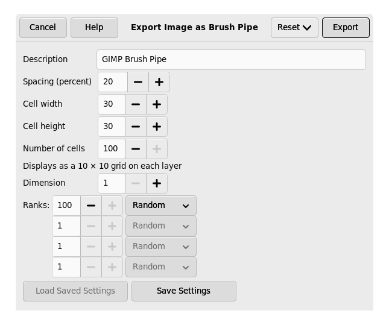
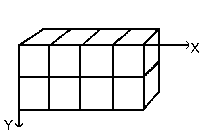
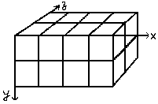
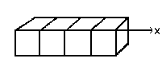
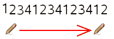
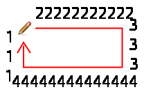
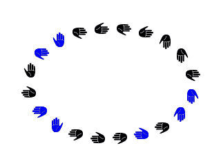

Just like for normal brushes, these animated brushes can also be either grayscale or color. For grayscale images, where the actual brush will use the current foreground color, you use white for transparency. For color images, transparent parts are used as such and when making brush strokes, the actual colors will be used instead of the foreground color.
To create a new animated brush, create either a grayscale or color image, based on whether you want the brush to use the user's foreground color, or the actual colors in the image. Then create the images for your animation steps. To save the brush into gih format, select → , name your work with the gih extension, and press the button. The following window is displayed:
Figura 7.18. Dialog to export an image as Brush Pipe

Dialog to export an image as GIMP image hose
This dialog box has several options that allow you to select how your brush is animated.
- Espaçamento (Percentagem)
-
“Espaçamento” é a distância entre marcas de pincel consecutivas quando você traça uma pincelada com o ponteiro do mouse. Você deve considerar o ato de desenhar com o pincel — ou qualquer outra ferramenta de pintura, exceto a ferramenta de Tinta — como se fosse uma série de carimbos. Se o espaçamento for pequeno, as marcas de carimbo ficam muito próximas e a pincelada parece um traço contínuo. Se o espaçamento for grande, as marcas serão separadas: isso é interessante para um pincel colorido (como pincel de “pimentão”, por exemplo). Os valores variam entre 1 e 200, e essa porcentagem se refere ao “diâmetro” do pincel: 100% equivale a um diâmetro.
- Descrição
-
É o nome do pincel que vai aparecer no diálogo de pinceis quando o pincel for selecionado.
- Tamanho da célula
-
Este é o tamanho de células que você vai recortar das camadas...o padrão é uma célula por camada, com esse tamanho igual o tamanho da camada. Nesse caso só há um aspecto do pincel por camada.
Nós poderíamos ter uma grande camada e recortar as células, que se tornariam diferentes aspectos (quadros) do pincel animado.
Por exemplo, se quisermos um pincel de 100x100 pixels com 8 aspectos diferentes, podemos tomar esses 8 aspectos de uma única camada de 400x200 pixels, ou de uma de 300x300 pixels mas que deixaria uma célula sem uso.
- Número de células
-
Esse é o número de células (uma célula para cada aspecto) que será cortado da imagem. O padrão é o número de camadas da imagem.
- Mostrar como
-
Essa linha lhe diz como as células estão arranjadas nas camadas. Se, por exemplo, você especificar a largura das células de forma que haja duas células por camada em quatro camadas (8 células no total), o GIMP vai mostrar:
2 linhas de 1 coluna em cada camada. - Dimension, Ranks, Selection dropdown
-
Aqui as coisas começam a se complicar! São necessárias algumas explicações para entender como arranjar as células e camadas
GIMP starts retrieving cells from each layer and stacks them into a FIFO stack (First In First Out: the first in is at the top of the stack and so can be first out). In our example 4 layers with 2 cells in each, we'll have, from top to bottom: first cell of first layer, second cell of first layer, first cell of second layer, second cell of second layer, …, second cell of fourth layer. With one cell per layer or with several cells per layer, result is the same. You can see this stack in the Layers Dialog of the resulting
.gihimage file.O GIMP cria uma tabela (um tipo de dado em “array”, internamente) para essa pilha, com as Dimensões que você configurar. Você pode usar até 4 dimensões.
Em ciência da computação, uma matriz (array) tem a forma “minhamatriz(x,y,z)” para uma matriz de 3 dimensões. É fácil imaginar uma matriz de 2 dimensões: em papel, é uma tabela com linhas e colunas

. Com uma matriz tridimensional, nós não falamos em linhas e colunas, mas em Dimensões e Níveis. A primeira dimensão é ao longo do eixo x, a segunda ao longo do eixo y, e a terceira ao longo do eixo z. Cada dimensão tem níveis de células.

Para preencher esta matriz, o GIMP começa tomando células do topo da pilha. A forma como ele faz isso lembra um odômetro: os índices dos níveis mais a direita mudam primeiro, e quando o índice chega ao máximo, os índices dos níveis mais a esquerda mudam. Por exemplo, para uma matriz de (4,2,2) as imagens são pegas para preencher a matriz na seguinte sucessão: (1,1,1),(1,1,2),(1,2,1),(1,2,2),(2,1,1),(2,1,2),(2,2,2),(3,1,1).... (4,2,2). Nós vamos ver um exemplo mais completo disso adiante.
Além do número de níveis que você pode dar a cada dimensão, você também pode atribuir a elas um modo de Seleção. Você tem vários modos que serão aplicados quando se pintar com este pincel. De acordo com o nível selecionado em cada dimensão, será escolhida a célula contendo o “carimbo” para aquela parte da pincelada:
- Incremental
-
O GIMP seleciona um nível daquela dimensão de acordo com a ordem dos níveis, em sequência - nível 1, 2, 3, etc...
- Angular
-
O GIMP seleciona um nível para a dimensão em questão de acordo com o ângulo do pincel (direção de pintura)
The first rank is for the direction 0°, upwards. The other ranks are affected, clockwise, to an angle whose value is 360/number of ranks. So, with 4 ranks in the concerned dimension, the angle will move 90° clockwise for each direction change: second rank will be affected to 90° (rightwards), third rank to 180° (downwards) and fourth rank to 270° (-90°) (leftwards).
- Random (aleatório)
-
O GIMP seleciona um nível ao acaso (aleatoriamente) da dimensão em questão.
- Velocity, Pressure, X tilt, Y tilt
-
Essas opções são para desenhos sofisticados feitos com mesas digitalizadoras (tablets)
Exemplos
- Um tubo de imagens de uma dimensão
-
Bem! E tudo isso é útil para que mesmo? Vamos examinar gradualmente com exemplos. Você pode na verdade colocar em cada dimensão configurações que vão lhe dar uma ação particular.
Vamos começar com um pincel de uma dimensão (1D) que vai nos ajudar a estudar como funcionam os modos de seleção. Nós podemos imaginar isso:

- siga esses passos:
-
Select → from the main menu.
Defina Largura e Altura, por exemplo, para 30 pixels.
Nas Opções Avançadas, defina o Espaço de Cor para Cor RGB e defina Preencher com para Transparência.
Abra uma imagem de 30x30 pixels, RGB com transparência. Apague a camada de “fundo”, e com a ferramenta de texto, crie 4 camadas: “1”, “2”, “3”, “4”.
-
Select → from the main menu to first save your image as an
.xcffile to keep its properties.Select → from the main menu to export the image as an animated brush with the
.gihextension.Export the image with a
.gbrextension in thebrushesdirectory located inside your personal GIMP configuration folder. -
In the Export Image as Brush Pipe dialog, provide a Description, set the Spacing (percent) to 100, set the Cell size to 30×30, set Dimension to 1, and set Ranks to 4, and the Selection drop-down to incremental. Then click the button.
-
In the Brush Dialog, click on the button
 .
.
E veja seu maravilhoso pincel aparecer bem no meio dos outros pinceis. Você pode usa-lo imediatamente, sem reiniciar o GIMP.
Selecione seu pincel. Selecione a ferramenta lápis, por exemplo, e clique e segure com ele em uma nova imagem:

Você vê os números 1, 2, 3 e 4 um após o outro, em ordem.
-
Take your
.xcfimage file back and export it as.gihsetting the Selection drop-down to random:
Os dígitos serão exibidos numa ordem aleatória
-
Now set the Selection drop-down to angular:

-
- Um tubo de imagens de 3 dimensões
-
Agora vamos criar um pincel animado com 3 dimensões. Sua orientação vai mudar de acordo com a direção do pincel, ele vai alternar as mãos direta e esquerda regularmente e sua cor se alternará ao acaso entre preto e azul.
A primeira pergunta que temos que responder é o número de imagens (células) que serão necessárias. Nós reservamos a primeira dimensão (x) para a direção do pincel (4 direções). A segunda dimensão (y), é para a alternância entre esquerda e direita, e a terceira dimensão (z) para a variação das cores. Esse pincel será representado internamente numa matriz 3D “minhamatriz(4,2,2)”:

. Há 4 níveis na primeira dimensão, 2 níveis na segunda dimensão (y) e 2 níveis na terceira dimensão(z). Vemos que são 4x3x2 = 16 células. Precisamos então de 16 imagens.
-
Criando as imagens da dimensão 1 (x)
Abra uma nova imagem de 30x30 pixels, com preenchimento transparente. Usando um fator de zoom conveniente, desenhe uma mão esquerda com os dedo para cima. Salve-a com um nome como
handL0k.xcf(as letras e números são para você saber o que há em cada arquivo - você pode usar nomes mais descritivos. Este nome (handL0K) é para “Hand Left 0° blacK” - (esquerda, 0 graus, preto)).Open the Layers Dialog. Double click on the layer to open the Layer Attributes Dialog and rename it to handL0k.
Duplique a camada. Deixe somente a camada duplicada visível, selecione-a e aplique uma rotação de 90° (Camada/Transformar/Rotacionar 90° horário).Renomeie- a para “esquerda-1-preta”.
Repita a operação mais duas vezes e crie as camadas “esquerda-180-preta” e “esquerda-270-preta”.
-
Criando as imagens da dimensão 2 (y)
Esta dimensão no nosso exemplo tem dois níveis, um para a mão direita, e um para a mão esquerda. As imagens da mão esquerda já existem — nós criaremos as imagens de mão direita espelhando a mão esquerda.
Duplique a camada “esquerda-0-preta”, torne-a a única camada visível. Aplique nela um espelhamento horizontal (Camada/Transformar/Espelhar Horizontalmente) e ponha nela o nome de “direita-0-preta”.
Repita nela as mesmas operações feitas com a mão esquerda para criar a mão direita nas quatro direções diferentes, com os nomes apropriados (“direita-90-preta”...)
Mude a ordem das camadas, de forma que você tenha, de cima para baixo, uma rotação no sentido horário, alternando as mãos esquerdas e as mãos direitas: esquerda-0-preta, direita-0-preta, esquerda-90-preta, direita-90-preta, ... até direita-270-preta como a última camada.
-
Criando as imagens da dimensão 3 (z)
Criando imagens da dimensão 3 (z): A terceira dimensão tem dois níveis: um para a cor preta, e um para a cor azul. O primeiro nível, preto, já está pronto. As imagens do segundo nível serão uma cópia, em azul, das imagens já feitas até a dimensão 2. Então teremos 16 imagens. Mas uma pilha de 16 camadas já começa a ficar complicada de gerenciar, então usaremos camadas com duas imagens.
Selecione a camada “esquerda-0-preta”, e deixe-a como única camada visível. Usando a opção de “Imagem->tamanho da tela de pintura...”, mude o tamanho de nossa imagem para 60x30 pixels (mantenha as camadas encostadas no lado esquerdo da imagem)
Duplicate handL0k layer. On the copy, fill the hand with blue using Bucket Fill tool.
Selecione a ferramenta de Mover, e marque nas opções de ferramenta seu modo está em Mover a camada atual. Mova a mão azul para o lado direito da imagem - faça isso de forma precisa, usando .
Make sure only handL0k and its blue copy are visible. Right click on the Layers dialog: Apply the command with the option Expand as Necessary. You get a 60×30 pixels layer with the black hand on the left and the blue hand on the right. Rename it to “handsL0”.
Repita as mesmas operações (tornar única visível, duplicar, pintar de azul, mover, combinar camadas visíveis, renomear) com as outras 7 camadas.
-
Coloque as camadas em ordem
As camadas devem estar na ordem certa de forma que o GIMP possa achar a imagem requerida no momento de usar o pincel. Nossas camadas já estão na ordem correta, mas precisamos entender, de forma mais geral, como é essa ordem. A primeira forma é matemática: O GIMP divide as 16 imagens primeiro em 4 grupos - isso dá 4 grupos de 4 imagens para a primeira dimensão. Cada grupo representa uma direção do pincel. Então, ele divide cada grupo em dois - isso dá dois grupos de duas imagens cada para compor a segunda dimensão(no nosso caso, cada duas imagens estão em uma única camada) - e cada grupo desses representa a alternância entre direita e esquerda para a imagem. E por fim, uma última divisão por dois para a terceira dimensão, para representar uma cor entre o preto e o azul.
A outra forma é visual, usando a representação em matriz. A correlação entre os dois métodos é representada na imagem seguinte:

Como o GIMP lê esta matriz: O GIMP começa com a primeira dimensão, que está programada para ser “angular”, por exemplo, 90°. Nesse nível de 90°, na segunda dimensão, ele escolhe dentre o grupo de imagens dentre Esquerda/Direita de forma “incremental”. Então, na dimensão 3, de forma aleatória, ele escolhe uma cor. Por fim, nossas camadas devem estar nesta ordem:

-
Voilá. Seu pincel está pronto. Salve-o como uma imagem
.xcfantes (senão, se quiser alterar algo depois, não tem como), e então, exporte-o como um arquivo.gihcom os seguintes parâmetros:-
Espaçamento: 100
-
Descrição: Mãos
-
Tamanho da célula: 30x30
-
Número de células: 16
-
Dimensões: 3
-
Dimensão 1: 4 Níveis, Seleção: angular
-
Dimensão 2: 2 Níveis, Seleção: incremental
-
Dimensão 3: 3 níveis, Seleção: random
-
Ponha seu arquivo
.gihem uma das pastas de pinceis do GIMP (brushes), e atualize o diálogo de pincéis. Agora você pode usar seu pincel. Atenção: No GIMP atual você pode conseguir muitos dos mesmos efeitos que pinceis animados sofisticados usando as dinâmicas de pintura — em particular, basta ligar a opção de “Track direction” nas dinâmicas para que as pincelada acompanhem a direção do movimento.Figura 7.19. Aqui está o contorno de seleção elíptica usando este pincel, com as opções padrão:

Este pincel alterna as mãos direita e esquerda regularmente, azul e preto ao acaso e a direção de acordo com a direção de pintura.
-
-